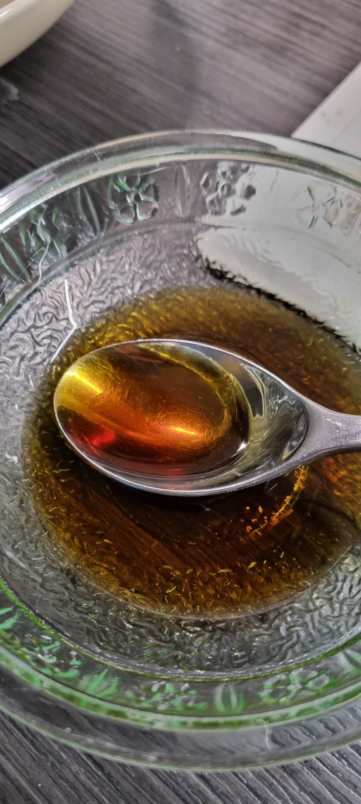
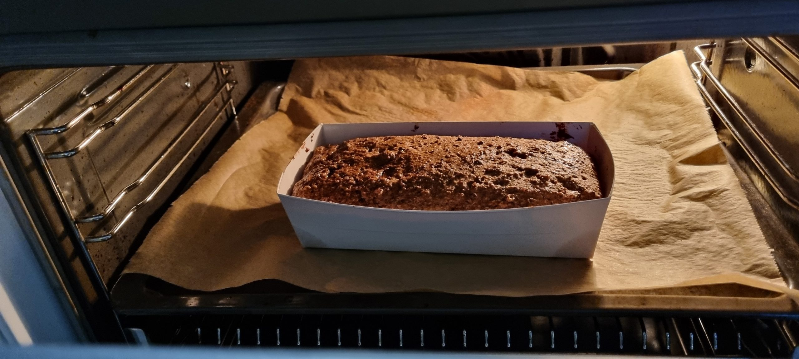
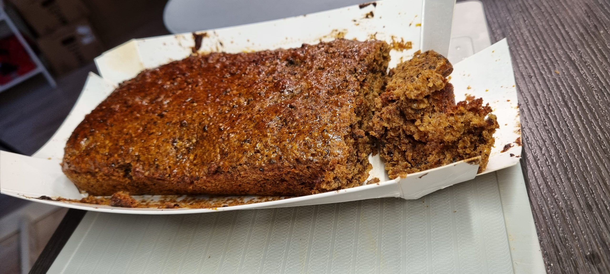

yritys 1:
-
tuoppi saaristolaisleippä valmis paketti :)
-
Lämmittää 2.5dl vesi 42c astetta
-
Sekoittaa kuiva hiva ja jauhetta
-
öljyä paistovuoan (kartonkinen tuki mukaan)
-
sekoittaa vedellä
-
laittaa vuokaan
-
Viltti päällä ö, laitta lämmin paikalle ja odottaa 45min
-
Uuniin 175c (vaan Mercedes vihta) 50-60minuutia
-
15min ennen valmis penseloida vesisiirappi (1rl siirappia ja 3 rl vesi)
-
anna se aika viilee
-
leikkaa

uunissa: 
jälkeen: 
yritys 2:
-
silikonilla vuoalla
-
öljytä vuoan parempi
-
aloittaa aikaisemmin että se saa enemmän aikaa viileää
-
laitta enemmän siirappia päällä :)